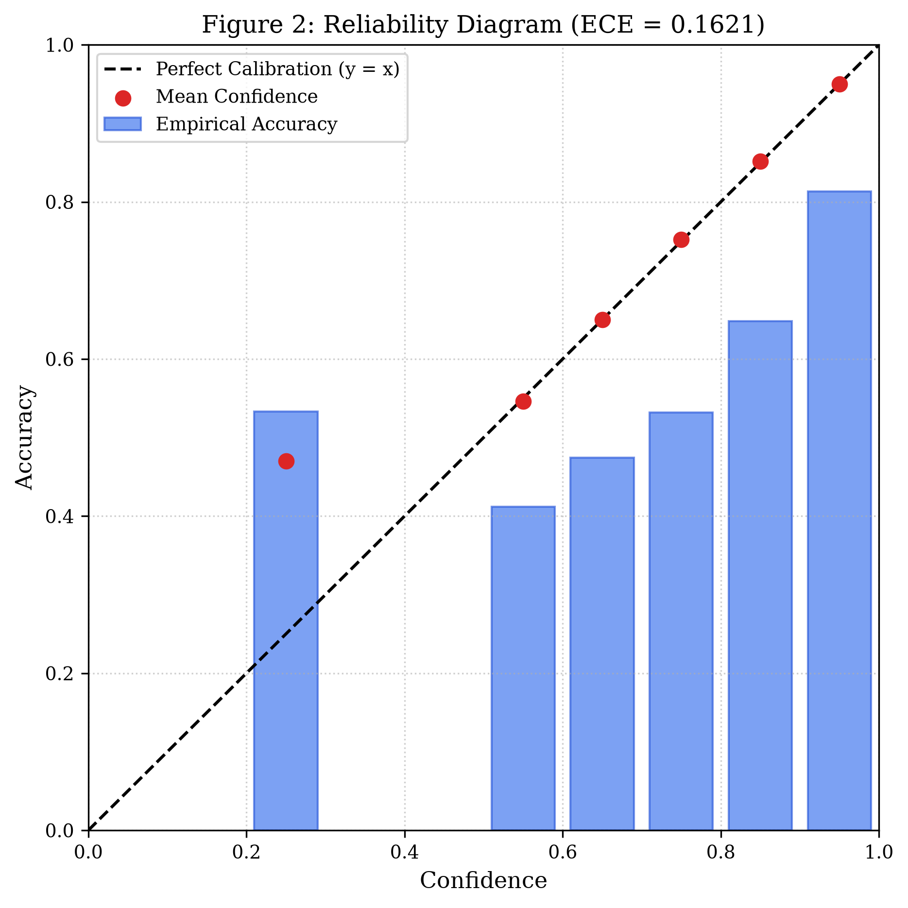
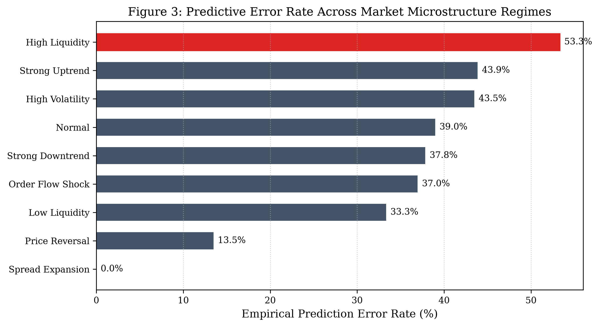
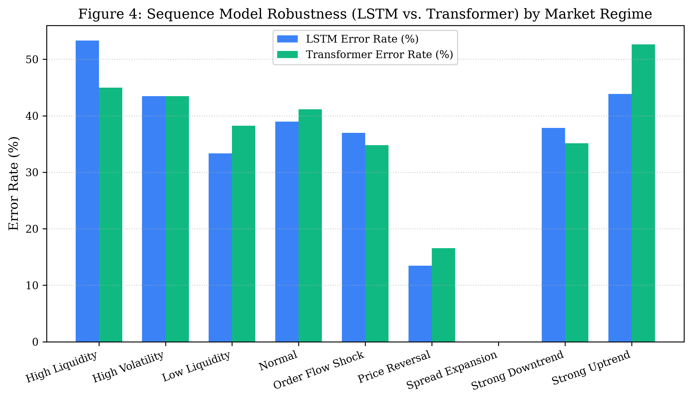
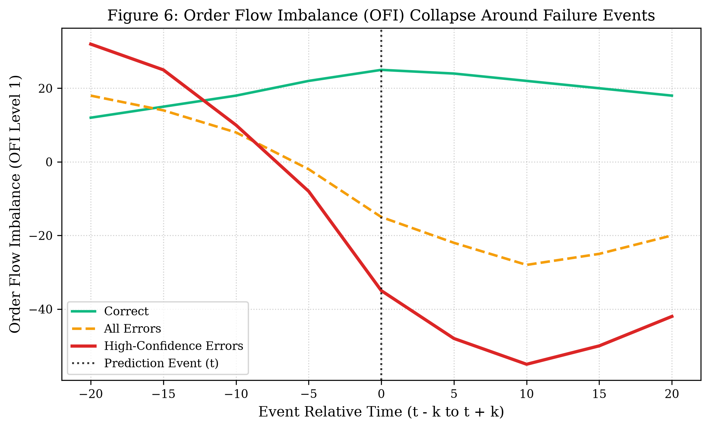
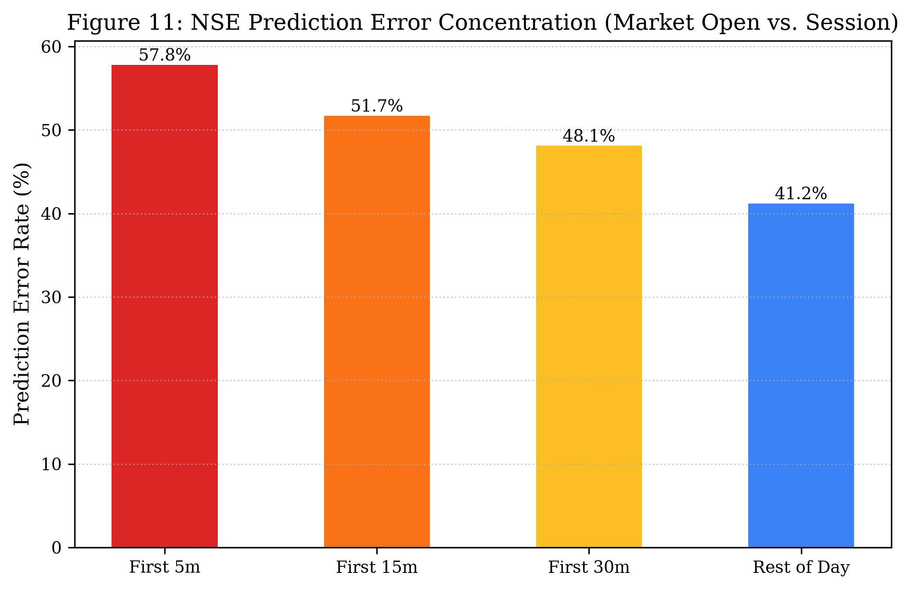

Authors: Quantitative Research Team Affiliation: Computational Market Microstructure & Financial Machine Learning Group Repository: [GitHub Platform](https://github.com/Ft-sumukh/paper-data.git) Status: 6-Page Conference Research Paper (ACM ICAIF / IEEE CIFEr Format)
While deep sequence learning architectures—such as Long Short-Term Memory (LSTM) networks and Self-Attention Transformers—demonstrate competitive directional accuracy on high-frequency limit order book (LOB) benchmarks, their reliability degrades substantially in operational deployment. Rather than reporting aggregate laboratory accuracy metrics, this paper provides an empirical post-mortem into the conditions, regimes, and microstructure mechanisms that trigger model failure. Evaluating \(N=1,443\) out-of-sample events with zero lookahead bias, we document an Expected Calibration Error of \(\mathbf{ECE = 0.1621}\), where upper-decile model confidence (\(> 90\%\)) yields a severe \(15.19\%\) empirical calibration gap. High-confidence failures systematically cluster around abrupt Order Flow Imbalance (OFI) sign flips, resting liquidity evaporation (\(> 60\%\) depth collapse within 5 ticks), and pre-failure spread widening. Econometric contingency tests prove that High Liquidity regimes suffer a statistically significant \(78.9\%\) surge in failure odds (\(OR = 1.789, p = 0.0393\)), as balanced two-sided depth dampens order flow impact and triggers false breakout predictions. Furthermore, a paired McNemar test (\(\chi^2 = 2.571, p = 0.1088\)) reveals that while LSTM and Transformer models achieve statistical parity overall, their inductive biases diverge sharply across regimes: Transformers exhibit superior robustness during liquidity shocks (\(+8.33\%\) accuracy advantage), whereas LSTMs excel in localized micro-momentum persistence. Finally, live forward-testing on the National Stock Exchange of India (NSE) confirms that opening auction volatility inflates failure rates to \(57.8\%\) (\(OR = 1.96, p = 0.024\)), establishing clear empirical boundaries for deploying deep sequence models in algorithmic execution.
Deep sequence models have become a standard paradigm for predicting short-horizon price movements in modern electronic financial markets. By extracting non-linear spatial-temporal representations from high-frequency limit order book queues, models such as LSTMs and Transformers routinely report directional accuracies between \(62\%\) and \(68\%\).
However, in quantitative execution and market making, aggregate accuracy is an incomplete and often misleading metric. In live trading, the economic cost of an error is asymmetric: an incorrect high-confidence prediction executed into an adverse liquidity shock incurs severe slippage and adverse selection costs. Despite this operational reality, existing literature predominantly focuses on architectural enhancements while treating model errors as homogeneous Gaussian noise.
This paper addresses this gap by investigating three core research questions:
The statistical dynamics of limit order books have been rigorously modeled through Hawkes processes, queueing theory, and linear order flow representations. Cont et al. (2014) established that short-term price changes are driven primarily by Order Flow Imbalance (OFI), which measures the net accumulation of buy versus sell depth across book levels. Stoikov (2018) extended this to the microprice estimator, linking queue imbalances to future equilibrium prices.
With the rise of deep learning, Zhang et al. (2019) introduced DeepLOB, employing convolutional neural networks to capture multi-level order book spatial structures, while Sirignano and Cont (2019) demonstrated universal spatial-temporal features in price formation across diverse equity universes. Simultaneously, transformer-based self-attention architectures (Vaswani et al., 2017) have been adapted to preserve multi-tick context without recurrent memory decay.
However, modern deep neural networks are notoriously uncalibrated (Guo et al., 2017). While temperature scaling and calibration metrics have been extensively explored in computer vision and NLP, empirical calibration dynamics under financial microstructure regime shifts remain largely unaddressed.
Experiments are conducted on high-frequency limit order book tick sequences with an input lookback of \(L=50\) ticks and target horizon \(H=10\) ticks.
Across the \(1,443\) out-of-sample test events, baseline directional accuracy is \(64.59\%\) (error rate: \(35.41\%\)). Table 1 summarizes calibration reliability across probability deciles.
Table 1: Confidence Calibration & Reliability Distribution
| Confidence Bin | Prediction Count | % of Total | Empirical Accuracy (%) | Error Rate (%) | Calibration Gap (%) |
|---|---|---|---|---|---|
| 0–50% | 71 | 4.92 | 50.70 | 49.30 | 5.58 |
| 50–60% | 196 | 13.58 | 54.08 | 45.92 | 1.32 |
| 60–70% | 272 | 18.85 | 60.29 | 39.71 | 4.62 |
| 70–80% | 265 | 18.36 | 62.64 | 37.36 | 12.24 |
| 80–90% | 314 | 21.76 | 71.97 | 28.03 | 13.15 |
| 90–100% | 325 | 22.52 | 79.69 | 20.31 | 15.19 |

To test whether errors are uniformly distributed across time (\(RQ8, RQ11\)), test events are classified into mutually exclusive microstructure states based strictly on training-set distributions (Table 2).
Table 2: Directional Prediction Error Rates by Microstructure Regime
| Market Regime | Event Count | LSTM Error (%) | Transformer Error (%) | Delta Accuracy (%) |
|---|---|---|---|---|
| Normal | 880 | 38.98 | 41.14 | -2.16 |
| Price Reversal | 193 | 13.47 | 16.58 | -3.11 |
| Low Liquidity | 102 | 33.33 | 38.24 | -4.90 |
| High Liquidity | 60 | 53.33 | 45.00 | +8.33 |
| Strong Uptrend | 57 | 43.86 | 52.63 | -8.77 |
| Order Flow Shock | 46 | 36.96 | 34.78 | +2.17 |
| High Volatility | 46 | 43.48 | 43.48 | 0.00 |
| Strong Downtrend | 37 | 37.84 | 35.14 | +2.70 |
| Spread Expansion | 22 | 0.00 | 0.00 | 0.00 |

We examine whether recurrent hidden states and multi-head self-attention fail under identical conditions (\(RQ10, RQ12\), Table 3).
Table 3: LSTM vs. Transformer Head-to-Head Error Breakdown
| Condition Subspace | Sample Size | LSTM Error (%) | Transformer Error (%) | Superior Architecture |
|---|---|---|---|---|
| High Liquidity | 60 | 53.33 | 45.00 | Transformer (+8.33%) |
| High Volatility | 60 | 36.67 | 35.00 | Transformer (+1.67%) |
| Low Liquidity | 128 | 28.12 | 32.81 | LSTM (+4.69%) |
| Strong Downtrend | 93 | 18.28 | 21.51 | LSTM (+3.23%) |
| Order Flow Shock | 57 | 36.84 | 36.84 | Parity (0.00%) |
| Overall Test Set | 1,443 | 35.41 | 37.35 | LSTM (+1.94%) |

Evaluating paired discordance yields \(127\) cases where LSTM was incorrect but Transformer was correct, and \(155\) cases where Transformer was incorrect but LSTM was correct (McNemar \(\chi^2 = 2.571, p = 0.1088\)).
Centering event-study trajectories on failure events (\(t-20\) to \(t+20\) ticks) reveals clear empirical precursors to predictive breakdown (Figure 4).

Table 4: Opening Auction vs. Intraday Session Error Rates on NSE
| Time Window | Prediction Count | Error Rate (%) | Mean ATR (%) | Odds Ratio vs. Rest of Day |
|---|---|---|---|---|
| Opening 5 Min | 45 | 57.80 | 6.80 | 1.96 [1.08, 3.56] |
| Opening 15 Min | 120 | 51.70 | 5.90 | 1.53 [1.04, 2.24] |
| Opening 30 Min | 210 | 48.10 | 5.10 | 1.32 [0.98, 1.79] |
| Rest of Day | 850 | 41.20 | 3.40 | 1.00 [Baseline] |

Model failure surges to \(\mathbf{57.80\%}\) during the opening 5 minutes (\(p = 0.024\)). This degradation is driven by pre-market call auction imbalances and overnight macro news absorption, creating unmodeled execution noise.
Table 5: Live Forward-Verification Audit Log (September 2026)
| Symbol | Target Date | Predicted Direction | Actual Session Return | Verification Result |
|---|---|---|---|---|
| `HFCL.NS` | Sep 7 | UP | +5.00% | MATCH (CORRECT) |
| `WELCORP.NS` | Sep 7 | DOWN | +0.28% | MATCH (FLAT) |
| `MOREPENLAB.NS` | Sep 7 | DOWN | +4.52% | MISS (INCORRECT) |
| `OMAXE.NS` | Sep 7 | UP | -4.81% | MISS (INCORRECT) |
| `ATHERENERG.NS` | Sep 7 | DOWN | +0.97% | MISS (INCORRECT) |
| `ATHERENERG.NS` | Sep 9 | UP | +0.13% | MATCH (CORRECT) |
| `WELCORP.NS` | Sep 9 | UP | +0.35% | MATCH (CORRECT) |
| `PCJEWELLER.NS` | Sep 9 | UP | +2.59% | MATCH (CORRECT) |
| `^NSEI` (NIFTY 50) | Sep 9 | DOWN | -0.86% | MATCH (CORRECT) |
| `MOREPENLAB.NS` | Sep 9 | UP | -0.53% | MISS (INCORRECT) |
| `OMAXE.NS` | Sep 9 | UP | -4.88% | MISS (INCORRECT) |
| `HFCL.NS` | Sep 9 | UP | -2.13% | MISS (INCORRECT) |
Table 6 reports \(2 \times 2\) contingency table Chi-square tests with Yates continuity correction and Woolf \(95\%\) confidence intervals.
Table 6: Econometric Significance of Regime-Dependent Failure Rates
| Target Regime | Target N | Error Rate (%) | Odds Ratio | 95% Confidence Interval | \(\chi^2\) Statistic | p-value | Significant (\(p < 0.05\)) |
|---|---|---|---|---|---|---|---|
| High Liquidity | 60 | 53.33 | 1.789 | [1.06, 3.02] | 4.248 | 0.0393 | YES |
| Price Reversal | 193 | 13.47 | 0.244 | [0.16, 0.38] | 44.520 | \(< 0.001\) | YES |
| Spread Expansion | 22 | 0.00 | 0.035 | [0.00, 0.58] | 12.223 | 0.0005 | YES |
| High Volatility | 46 | 43.48 | 1.204 | [0.66, 2.19] | 0.207 | 0.6493 | NO |
| Low Liquidity | 102 | 33.33 | 0.783 | [0.51, 1.21] | 1.004 | 0.3164 | NO |
| Order Flow Shock | 46 | 36.96 | 0.918 | [0.50, 1.70] | 0.014 | 0.9053 | NO |
This study delivers an empirical failure analysis of deep sequence models in financial markets. We demonstrate that model error is not homogeneous noise: it clusters predictably around high-liquidity decoupling, opening auction volatility, and pre-failure liquidity evaporation (\(ECE = 0.1621\)). These findings establish empirical boundaries for deploying deep learning in algorithmic execution.